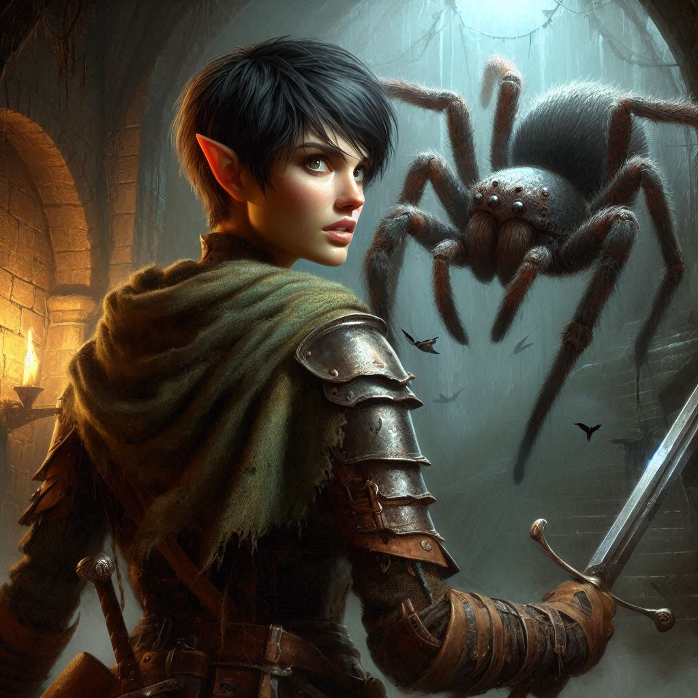

Shadows in the Library
You stand alone in the hushed stillness of the royal library, the faint scent of aged parchment swirling around you like ghosts of forgotten knowledge. Moonlight filters through the high windows, illuminating the towering shelves lined with books and scrolls, casting elongated shadows that dance across the floor. In the center of the room, the map you seek lies tantalizingly close, guarded by intricate magical wards that Liora warned you about.
Your mind races as you replay her words. “The answer lies in the light.” What does that mean? You scan the room, searching for something—anything—that could hint at how to defeat the wards. The moonlight streams through the window, but is it enough to counter the ancient magic protecting the map?
You approach the pedestal where the map rests, your heart pounding. Its allure pulls you closer, the parchment shimmering faintly under the silvery glow. Could it be as simple as the light itself? You hesitate, torn between caution and desperation. This map holds the key to finding Jorsh, and possibly stopping Varis’s dark plot.
As you draw nearer, a wave of determination washes over you. You reach for the map, fingers brushing against the cool surface. The moment you touch it, a chill sweeps through the air, and the wards spring to life. A low hum reverberates through the chamber, and you feel the ground beneath you tremble.
“No, no, no!” you gasp, yanking your hand back. But it’s too late. The room shifts, and a trapdoor bursts open beneath your feet. You tumble down into darkness, the world above fading away in a blur of panic and confusion.
The fall feels endless, the air rushing past you until you land with a thud in a damp, cold dungeon. Pain radiates from your ankle, but you push it aside as you scramble to your feet, adrenaline surging through your veins. Shadows loom in every corner, and the silence is suffocating.
Breathless, you take a moment to gather yourself. This is a dungeon, but it’s not just a holding cell. You can escape! You must find a way back to the library before Varis can enact his dark plan.

As you cautiously move through the dimly lit corridor, the air grows heavy with an eerie stillness. Your footsteps echo against the stone walls, and you squint into the shadows, searching for a sign of an exit. But something stirs in the darkness—a faint rustling that sends shivers racing down your spine.
Suddenly, you spot movement. Your heart pounds as you step back, instinctively reaching for your dagger. A massive, hairy form creeps from the shadows. A giant spider, its legs splayed and glistening, hisses as it advances toward you, eyes glinting with malevolence.
You grip your dagger tightly, adrenaline flooding your system. “Get away from me!” you shout, launching forward with a fierce determination. You dive to the side as the spider lunges, narrowly avoiding its lethal fangs. You strike, your blade slicing through the air, finding purchase in its tough exoskeleton.
The creature screeches, its legs flailing wildly. You press on, delivering blow after blow until the spider collapses in a crumpled heap. Victory! But your triumph is short-lived as you hear another sound—this time, a low hiss that sends dread coursing through your veins.
You turn, and your blood runs cold as you face the true horror of the dungeon. A pit of giant snakes, coiling and writhing, fills the chamber ahead. Their scales shimmer in the low light, and their eyes glisten with a predatory hunger. You stumble backward, heart racing, panic gripping you.
You’ve faced danger before, but this? This is different. You can’t fight them all. They slither closer, their tongues flickering out as they sense your presence, and you know you’re out of time. You have to escape!
You dart back the way you came, but the snakes are quick, pursuing you with terrifying speed. You glance over your shoulder, fear flooding your heart as they close in. You feel the ground tremble beneath you as the first snake lunges. You dive to the side, narrowly avoiding its fangs, but it’s a futile attempt.
Another snake strikes, its fangs sinking into your arm, a fiery pain coursing through you. You cry out, your vision blurring as the world spirals away. You fight against the darkness that creeps in, but it overwhelms you, dragging you into its depths.
The last thing you hear is the slithering hiss of the snakes, echoing in the dungeon, as you succumb to the shadows.